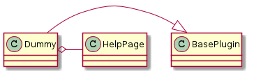
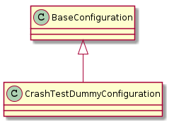
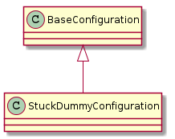

The DummyClass does not do anything. It is meant to be used to test the infrastructure.

| Dummy(*args, **kwargs) | A plugin to test the infrastructure (a no-op) |
| Dummy.help([width]) | Prints a help-string for the plugin |
| Dummy.sections | An ordered dict for the help page |
| Dummy.product | builds and returns a DummyClass |
| Dummy.fetch_config() | prints a sample configuration |
This is how the configuration sub-section should appear.
This is a dummy that crashes when called. The config-file should specify which error to raise:
[[CRASHTESTDUMMY]]
plugin = CrashTestDummy
error_message = I have Crashed
error_module = ape.infrastructure.errors
error = ApeError
function = __call__
This is a holder of constants for the CrashTestDummy.
class CrashTestDummyConstants(object):
__slots__ = ()
error_module_option = 'error_module'
error_option = 'error'
error_message_option = 'error_message'
function_option = 'function'
error_module_default = 'exceptions'
error_default = 'Exception'
error_message_default = 'My work is done, why wait?'
function_default = '__call__'
The configuration specification for the Crash Test Dummy.
crash_configspec = """
plugin = option('CrashTestDummy')
error_module = string(default='exceptions')
error = string(default='Exception')
error_message = string(default='My work is done, why wait?')
function = string(default='__call__')
"""
A class to handle the config_obj configuration.

| CrashTestDummyConfiguration(*args, **kwargs) | Translates the configobj configuration to a CrashTestDummy |
| CrashTestDummyConfiguration.configspec | A configspec built from configspec_source for validation |
| CrashTestDummyConfiguration.configuration | validates and sets the configuration using the source configuration |
| CrashTestDummyConfiguration.product | A crash test dummy |
| CrashTestDummy(*args, **kwargs) | A plugin to test the infrastructure by crashing |
The configuration specification for the StuckDummy.
stuck_dummy_configspec = """
plugin = option('StuckDummy)
__many__ = string
"""

| StuckDummyConfiguration(*args, **kwargs) | Configuration builder for the dummy that hangs |
| StuckDummyConfiguration.configspec | A configspec built from configspec_source for validation |
| StuckDummyConfiguration.configuration | validates and sets the configuration using the source configuration |
| StuckDummyConfiguration.product | The HangingDummy callable object |
This is a dummy that hangs when called.
| StuckDummy(*args, **kwargs) | A plugin to test the infrastructure by hanging |
| DummyClass(*args, **kwargs) | The Dummy Class does nothing |
| DummyClass.__call__(*args, **kwargs) | Logs the fact that it was called |
| CrashDummy(error[, error_message, function]) | A dummy that crashes |
| CrashDummy.__call__() | Raises error if self.function is __call__ (this needs to be defined to work) |
| HangingDummy(*args, **kwargs) | A dummy that hangs |
| HangingDummy.__call__(*args, **kwargs) | Sleeps for three years in an infinite loop |